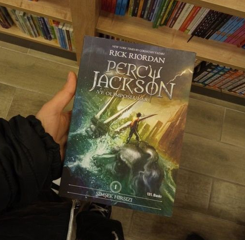

GÉNERO CIENCIA FICCIÓN Y FANTASÍA
Los géneros de ciencia ficción y fantasía son dos de los más imaginativos y expansivos en la literatura, conocidos por transportar a los lectores a mundos y realidades completamente diferentes a las nuestras.
Art by Tua Xiong
,,))))))));,
__)))))))))))))),
\|/ -\(((((''''((((((((.
-*-==//////(('' . `)))))),
/|\ ))| o ;-. '((((( ,(,
( `| / ) ;))))' ,_))^;(~
| | | ,))((((_ _____------~~~-. %,;(;(>';'~
o_); ; )))(((` ~---~ `:: \ %%~~)(v;(`('~
; ''''```` `: `:::|\,__,%% );`'; ~
| _ ) / `:|`----' `-'
______/\/~ | / /
/~;;.____/;;' / ___--,-( `;;;/
/ // _;______;'------~~~~~ /;;/\ /
// | | / ; \;;,\
(<_ | ; /',/-----' _>
\_| ||_ //~;~~~~~~~~~
`\_| (,~~
\~\
~~
Los mas populares actualmente
Para que te enamores de las mejores novelas románticas y te sumerjas entre sus páginas, aquí te presentamos un listado con los libros de amor más pupulares del momento.
Percy Jackson
♥ Rick Riordan
"'Percy Jackson' era una historia para mi hijo, pero quería que otros niños sientan que son importantes." Rick Riordan
SIPNOSIS:
¿Qué pasaría si un día descubrieras que, en realidad, eres hijo de un dios griego que debe cumplir una misión secreta? Pues eso es lo que le sucede a Percy Jackson, que a partir de ese momento se dispone a vivir los acontecimientos más emocionantes de su vida: Percy es nada menos que un semidiós, es decir, el hijo de un dios y una mortal. Y como tal ha de descubrir quién ha robado el rayo de Zeus y así evitar que estalle una guerra en el monte Olimpo. Para cumplir la misión contará con la ayuda de sus amigos Grover, un joven sátiro, y Annabeth, hija de Atenea.
Comprar el libro aquíDel libro al cine 🎬
Con la serie, los seguidores tienen la oportunidad de ver las historias de Percy cobrar vida con mayor precisión y detalle. A continuación, te dejamos el tráiler para que te adentres nuevamente en el mundo de Percy Jackson